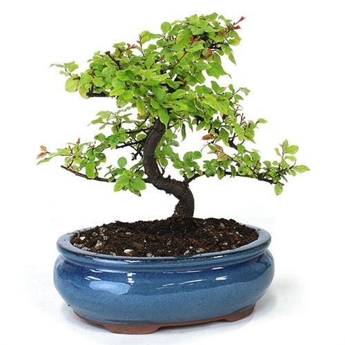

Not everyone enjoys leaving their Bonsai out in their garden, and not everyone has
the space to do so. Not only this, some people tend to enjoy the view of a beautiful miniature
tree growing inside the four walls of their own home. For his
reason, in this list, our team has compiled a list of the best Indoor Bonsai which does not tend
to require much sunlight. This also usually implies that the risk of infections are low as no
one enjoys having pests in their owm
home. Indoor Bonsais are typically less lessy and also tend to be more of an intermediate level
of Bonsai Art.
Dwarf jade
The Dwarf Jade is indigenous to the dry regions of South Africa. It is often sold as an
indoor bonsai. It can grow quite well inside the house as long as it is not overwatered and gets
enough sunlight.
It is a fleshy, soft, woody small tree that has a thick trunk, but a fine
branch structure with thick green glossy oval-shaped succulent leaves which can have reddish
margins. The bark of younger plants is soft
and green which turns reddish brown with age. Dwarf jade plants are succulents, so they tend to be
drought-tolerant and prefer minimum watering. It is important to note that it should be watered only
when the soil looks completely
dry.
Fukien tea
The Fukien Tea is a subtropical evergreen shrub that is native to various parts
of Japan, Indonesia, Taiwan, etc. It is an indoor bonsai tree.
It develops a
greyish-beige fissured bark. The leaves
are small, and leathery and have little white hairs on their glossy surface. The flowers are
star-shaped, white, and small and grow in clusters. The fruits are round and turn red when they turn
ripe. Under deficient conditions, it
can suffer from spider mites, and whiteflies, which can be avoided or removed by using insecticides.
It is important to provide plenty of sunlight and it is recommended to be careful not to overwater
the plant because if the soil is
constantly wet, it also tends to harm the plant in the long run.
Sweet plum

It is a popular indoor bonsai and is often produced in large quantities in South Asian
countries. It is great for classical landscapes or pen-jing. Its leaves are small, oval, and shiny.
In late summer, yellowish-white flower clusters can
develop, which is usually followed by tiny purple plum-shaped fruits. The bark is quite smooth and
dark brown with irregular patches peeling away, leaving light brown spots of young bark, which makes
the bark look very attractive.
It does not tolerate frost and needs warm temperatures even during winter.
Although it is often acquired by beginners, insufficient watering often causes problems. They are
susceptible to mealy bugs underneath
the shedding bark, which can be extracted using tweezers to preserve the tree’s appearance.
Ficus
Ficus thrives in an indoor environment. Ficus retusa and Ficus ginseng, both have
visually interesting trunks and can be grown inside.
They are adaptable because of their ability to respond positively to growing
restrictions. Since ficus trees are content in smaller containers, they're well suited to bonsai.
They're also forgiving of lapses in
watering and other types of care. Ficus plants don't mind the dry conditions of indoor environments,
but it is recommended to choose a sunny spot for the bonsai. They are also quite resistant to pests
and other infections.
Money tree
Money trees are evergreen broadleaf trees with hand-shaped compound leaves. The large
compound leaves, long stems, and the growth characteristics of the plant, which rarely develops real
branches, make it difficult to make it a proper bonsai.
This bonsai is popular for its affiliation with luck and wealth.
Money trees often have a slightly swollen trunk base, which serves as water
storage, and the bark is brownish. The long brown woody fruits of this bonsai contain seeds that can
be roasted and eaten as a snack.
If they have braided trunks, they often crush each other and cause problems. It is better to choose
a plant with a single trunk or to undo the braids to avoid such problems.